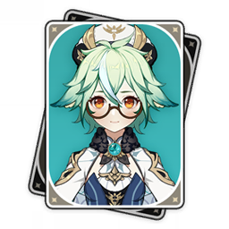
Сахароза
Алхимик Ордо Фавониус и помощница Альбедо. Исследует живые организмы и ищет способы изменять их с помощью алхимии. Любопытство постоянно приводит её к новым экспериментам.
Лица Тейвата
За каждым пейзажем стоят люди и их истории. Здесь собраны шестнадцать персонажей: алхимики, искатели приключений, мастера и правители. Восемь остановок идут в том же порядке, что и главы атласа, — от Мондштадта до Снежной.
Остановка 01

Алхимик Ордо Фавониус и помощница Альбедо. Исследует живые организмы и ищет способы изменять их с помощью алхимии. Любопытство постоянно приводит её к новым экспериментам.
Молодой искатель приключений, которому постоянно не везёт. После ухода товарищей остался единственным участником отряда Бенни. Несмотря на череду неудач, продолжает исследовать мир и искать приключения.
Остановка 02
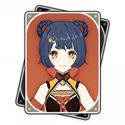
Шеф-повар ресторана «Вань Минь», особенно известная острыми блюдами. Одинаково увлечённо готовит и обслуживает гостей. Её кулинарные эксперименты и мастерство уже получили признание жителей гавани.
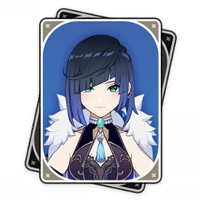
Загадочная жительница Ли Юэ, представляющаяся сотрудницей Департамента по делам граждан. Её имени нет в списках ведомства. Предпочитает оставаться в тени и не раскрывать своих планов.
Остановка 03
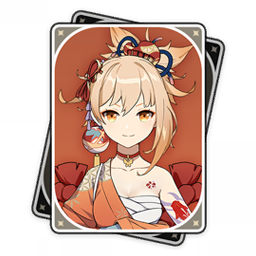
Мастер фейерверков и хозяйка лавки «Фейерверки Наганохары». Её называют Королевой праздника лета. В работе она сочетает увлечённость ремеслом с непосредственностью и ярким, открытым характером.
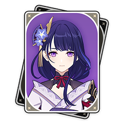
Правительница сёгуната Инадзумы, чья сила связана с громом и молниями. Следует идеалу вечности. Её образ и решения занимают центральное место в истории островного государства.
Остановка 04
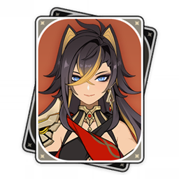
Наёмница из Пустынников, известная силой и смелостью. Заслужила хорошую репутацию среди товарищей по ремеслу. Её история знакомит с жизнью людей, для которых пустыня стала домом.
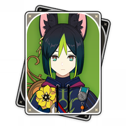
Лесной страж Авидьи и ботаник, окончивший Амурту. Патрулирует тропический лес и заботится о его обитателях. Находит время объяснить путникам, как беречь природу и избегать опасностей.
Остановка 05
Четвёртая из Предвестников Фатуи, известная под именем Слуга. Руководит Домом очага, где дети называют её Отцом. Её история тесно переплетается с судьбами героев Фонтейна.
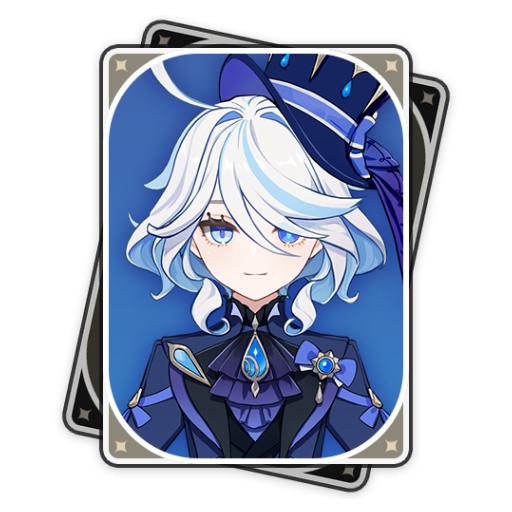
Одна из самых известных фигур Фонтейна, привыкшая к вниманию публики. Её образ связан со сценой и оперным театром «Эпиклез», где судебные разбирательства собирают зрителей.
Остановка 06
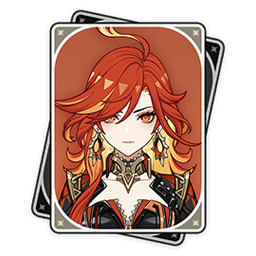
Архонт и лидер Натлана. Воплощает пламя, которое даёт жителям надежду и помогает противостоять злу. Её история связана с ответственностью за судьбу народа и будущее региона.
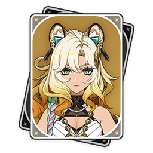
Кузнец из Нанацкайана, умеющая находить равновесие между работой и отдыхом. Серьёзно относится к своему ремеслу, но оставляет время для себя, не растворяясь целиком в обязанностях.
Остановка 07
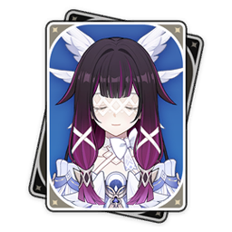
Богиня Луны Нод-Края, также известная как Куутар. Прежде занимала третье место среди Предвестников Фатуи под именем Субретка. Среди друзей предпочитает имя Коломбина Гипоселениа.
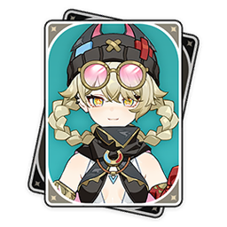
Сотрудница Куратория тайн, которая уверяет, что знает и умеет всё. За этим уверенным представлением скрывается героиня повседневной жизни Нод-Края, где у каждого найдутся свои секреты.
Остановка 08
Учёный из Королевской энергетической комиссии, занимающийся исследованиями энергии. Ему поручают важные секретные проекты. За талантом исследователя стоит непростой характер, а о своей работе он рассказывает далеко не всё.
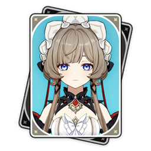
Седьмая из Предвестников Фатуи, носящая имя Марионетка. Стремится объяснять окружающий мир через математику и логику. При всей увлечённости исследованиями эта утончённая леди не пропускает чаепития.